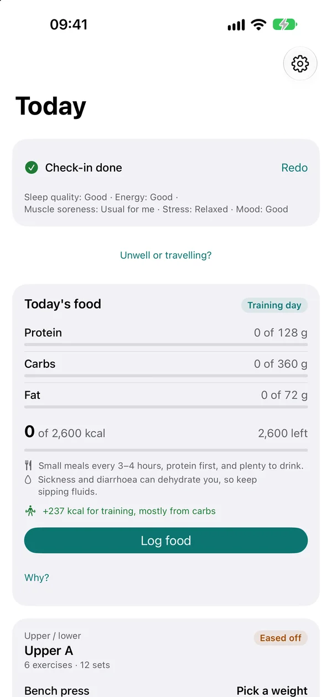

GLP-1 mode
On a GLP-1 medicine? Udapt works with it.
Turn on one switch. Nothing else is asked: no medicine name, no dose.
- Two optional taps in the morning check-in: Queasy today and Not hungry today. Either one makes a good day's session gentler.
- Your food card puts protein first, with small meals, protein first and plenty to drink.
- Strength training is how you keep muscle while you lose weight. Udapt keeps it in your week.
